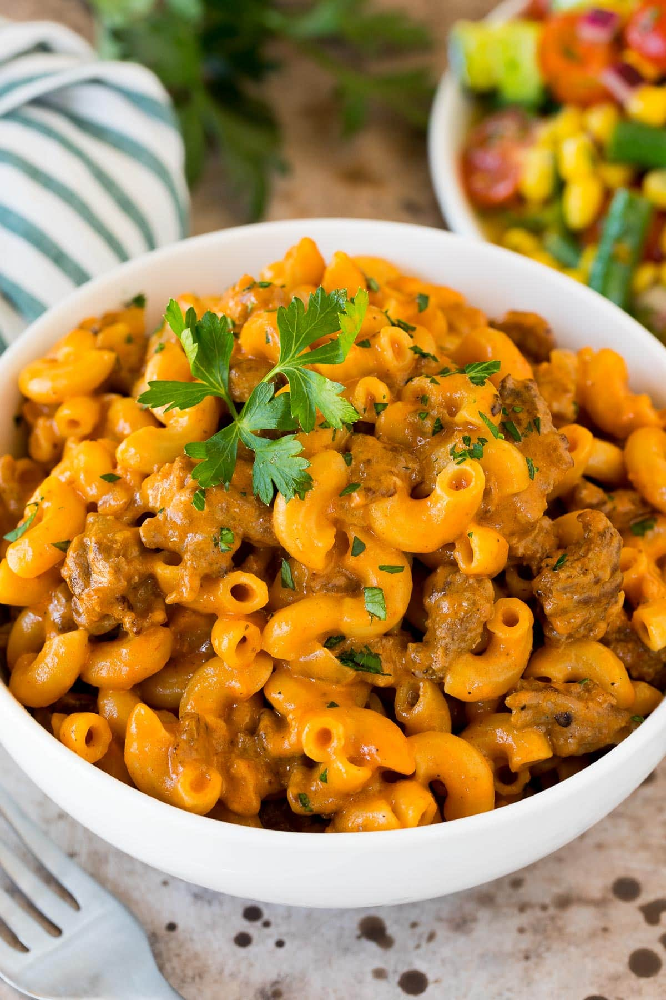

Homemade Hamburguer Helper

This homemade hamburger helper is far better than the boxed mix. With fresh spices, and a hint of tomato, it's beefy, cheesy, savory, and has all the makings of a weeknight family favorite.
Ingredients
- 1 pound 85% lean ground beef
- 1/2 cup diced yellow onion
- 2 tablespoons tomato paste
- 1 tablespoon ketchup
- 1/2 teaspoon garlic powder
- 1/2 teaspoon chilli powder
- 1/2 teaspoon kosher powder
- 1/4 teaspoon paprika
- 1/4 teaspoon ground black pepper
- 3 1/2 cups beef broth
- 1 cup elbow macaroni
- 6 ounces Cheddar cheese, shredded (about 1 1/2 cups)
Steps
Gather all ingredients.
Heat a large, heavy-bottomed pot over medium-high heat. Add beef and onion, and cook, stirring occasionally, until beef is crumbled, browned, and no longer pink, about 7 minutes. Spoon off and discard any fat.
Stir in tomato paste, ketchup, garlic powder, chili powder, salt, paprika, and pepper; cook, stirring constantly, until fragrant, about 2 minutes.
Add beef broth, and bring to a boil over high heat. Stir in macaroni; reduce heat to medium, and gently boil, uncovered, stirring occasionally, until pasta is tender and most of the liquid is absorbed, 13 to 15 minutes.
Remove from heat, and stir in Cheddar, ensuring cheese is fully melted and incorporated, 30 to 45 seconds. Let stand until thickened before serving, about 2 minutes.